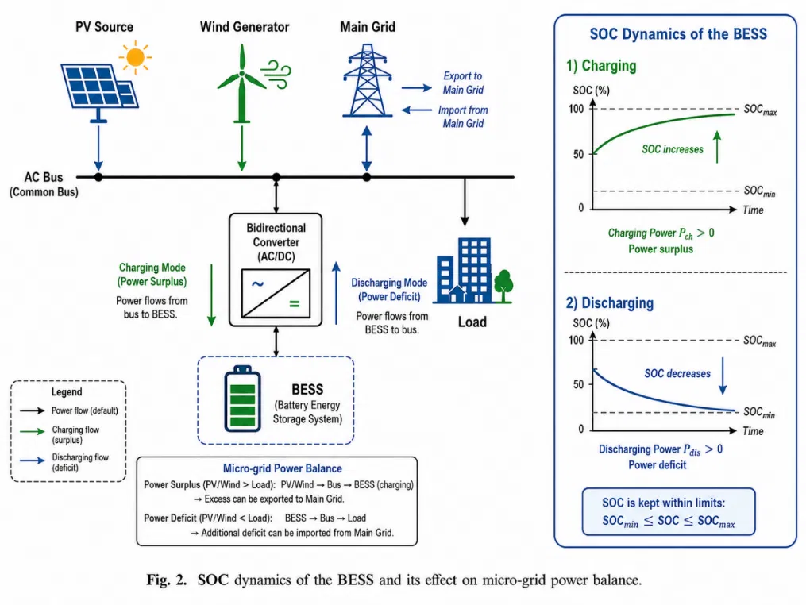
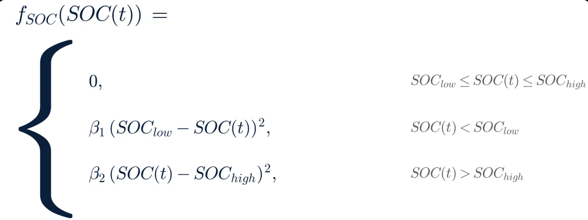
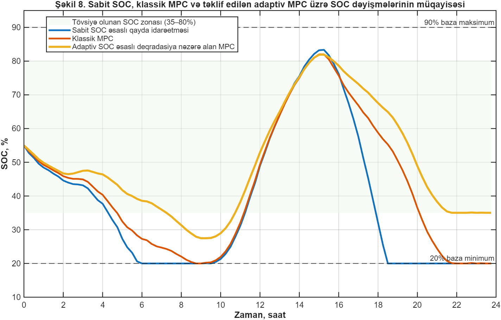
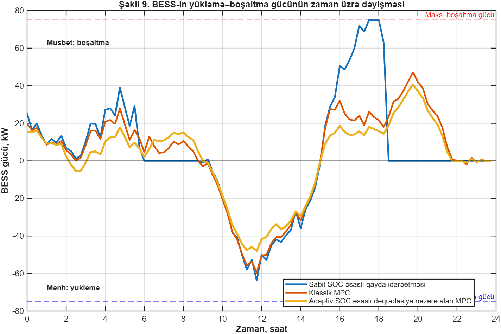
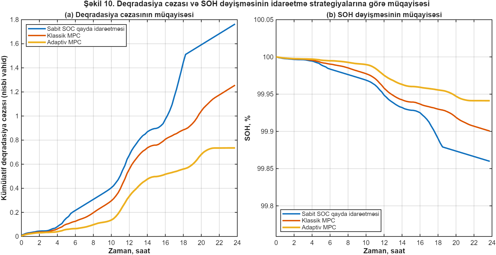

Adaptive SOC-Based Optimal BESS Management for Microgrids
Predictive and degradation-aware charging–discharging control for reliable, economically efficient and sustainable microgrid operation.

ADAPTIVE SOC-BASED OPTIMAL CHARGING–DISCHARGING MANAGEMENT WITH PREDICTIVE AND DEGRADATION-AWARE CONTROL FOR BATTERY ENERGY STORAGE SYSTEMS IN MICROGRIDS
A predictive, degradation-aware energy management framework that coordinates renewable sources, BESS operation and grid exchange in real time.
MPC
Forecast-led
SOC
Adaptive bounds
SOH
Asset-aware
Presenter
Assoc. Prof. Ilkin Aliyev
Azerbaijan Technical University (AzTU)
Co-authors
M.B. Namazov, I.A. Yolchuyev, I.I. Aliyev, A.T. Aslanova
2. Executive Summary
Research Objective
Development of a predictive, adaptive SOC, and degradation-aware control model for the long-term efficient management of BESS in microgrids.
Integrated Multidimensional Parameters
Load demand, PV/Wind generation, Grid tariffs, SOC, SOH, and Instantaneous Battery Degradation Cost.
Key Strategic Objectives
- Maintaining active power balance in the microgrid
- Reducing peak power drawn from the grid (Peak Shaving)
- Maximizing battery operational lifespan (SOH)
- Minimizing thermal and electrochemical degradation costs
3. Problem Statement and Relevance
Stochastic Generation
PV and wind power fluctuate significantly depending on solar radiation, cloud cover, and wind speed.
Drawback of Conventional Control
Static $SOC_{min}-SOC_{max}$ boundaries ignore battery degradation (SOH), thermal stress, and future peak demand.
Premature Degradation
Prolonged operation in high SOC zones leads to SEI layer thickening and premature capacity loss.
4. Conceptual Scientific Approach
Scientific Paradigm Shift: BESS should not be managed merely as a buffer energy source, but as a depreciating critical technical asset.
Predictive Horizon
Performs optimization by multi-step forecasting of future load and generation profiles.
Dynamic Boundaries
Dynamically updates the operating interval based on SOH and forecasted energy surplus/deficit.
Multi-Factor Cost
Incorporates DOD, C-rate, SOC, and thermal stress as penalty functions into the objective function.
5. Mathematical Model of the Microgrid and BESS
Components: PV, Wind Generator, BESS, Main Grid, Load, Central EMS.
Active power balance equation (for discrete time instant $t$):
$P_{PV}, P_{WT}$ - PV and Wind power; $P_{grid}$ - Grid exchange; $P_{ch}, P_{dis}$ - BESS charge/discharge; $P_{loss}$ - Converter losses.

6. BESS Mathematical Model and SOC Dynamics
SOC (State of Charge) – The ratio of the battery's available energy reserve to its nominal capacity. Discrete-time model:
Conventional Static Boundaries
Reduces battery lifespan because it ignores degradation and ambient temperature.
Proposed Adaptive Boundaries
Dynamically contracts/expands based on SOH and forecasted energy surplus/deficit.
7. Battery Degradation and SOH Model
State of Health (SOH) Definition:
Multi-Factor Degradation Cost Function:
Piecewise SOC Penalty Function $f_{SOC}(SOC)$:
When SOC is within the safe $[SOC_{low}, SOC_{high}]$ zone, the penalty is 0. Beyond this zone, the penalty increases quadratically:

8. Formulation of Adaptive SOC Boundaries
As the battery SOH degrades ($SOH < 80\%$), $SOC_{min,ad}$ is increased and $SOC_{max,ad}$ is reduced to prevent SEI layer degradation (narrowed operating range).
When daytime PV/Wind generation surplus is predicted, $SOC_{max,ad}$ is adjusted upward to widen the charging band and maximize renewable absorption.
Prior to the evening peak load demands, $SOC_{min,ad}$ is shifted upward to maintain a reserve energy buffer against grid outages.
9. Model Predictive Control (MPC)
MPC utilizes the future input vector over an $N$-step prediction horizon:
5 Stages of Receding Horizon Control:
- 1. Current Measurement ($U, I, SOC, T$)
- 2. Forecast Update
- 3. Objective Optimization
- 4. Execution of $u_k$ Only
- 5. Horizon Shift
10. Optimization Problem Formulation
Multi-Objective Minimization Function ($J$):
Objective Components
- Grid electricity purchase cost
- Instantaneous battery degradation depreciation cost
- Adaptive SOC band violation penalty
- Power converter ramp-rate penalty
System Constraints
- Power balance equality
- Converter power limits: $0 \le P_{ch} \le P_{ch}^{max}$, $0 \le P_{dis} \le P_{dis}^{max}$
- Adaptive SOC limits: $SOC_{min,ad} \le SOC \le SOC_{max,ad}$
11. Simulation Scenario and Comparison


12. Results Analysis and Discussion

- Fixed SOC strategy: the battery frequently approaches its lower and upper boundary regions, which increases electrochemical and thermal stress.
- Classic MPC: SOC variations become smoother, but battery lifetime is not explicitly protected in the optimization objective.
- Proposed adaptive MPC: SOC is maintained predominantly within a safe mid-range, while preserving energy reserves for anticipated demand.
- Charging-to-discharging transitions are smoother over the operating horizon.
- Sudden battery-power changes and converter ramping are reduced.
- The smoother profile improves power-converter stability, reduces cycling stress and supports the evening peak-load period more reliably.
Including a degradation penalty in the optimization discourages deep discharge and prolonged residence at high SOC. Consequently, the controller achieves a more balanced compromise between short-term energy-cost optimization and long-term battery lifetime preservation.
13. Conclusions and Future Research
The proposed adaptive SOC-based and degradation-aware MPC approach integrates the key operational and health-related factors required for coordinated BESS management in microgrids.
Integrated Control Framework
Main Advantages
- Improved microgrid energy balance and reduced peak power imported from the grid.
- More efficient use of renewable generation and reduced battery degradation.
- Preservation of BESS operational lifetime through health-aware scheduling.
Future Research Directions
References
- International Energy Agency, Batteries and Secure Energy Transitions, IEA Special Report, 2024.
- National Renewable Energy Laboratory, BLAST-Lite: Battery Lifetime Analysis and Simulation Tool Suite, 2023–2026.
- M. Asiri et al., “Impact of Temperature and State-of-Charge on Long-Term Degradation of Lithium-Ion Batteries,” RSC Advances, 2025.
- T. Morstyn et al., “Model Predictive Control for Distributed Microgrid Battery Energy Storage Systems,” IEEE Transactions on Control Systems Technology, 2018.
- P. Stadler, A. Ashouri and F. Maréchal, “Distributed Model Predictive Control for Energy Systems in Microgrids,” 2015.
- J. Vetter et al., “Ageing Mechanisms in Lithium-Ion Batteries,” Journal of Power Sources, vol. 147, no. 1–2, pp. 269–281, 2005.
- A. Barré et al., “A Review on Lithium-Ion Battery Ageing Mechanisms and Estimations for Automotive Applications,” Journal of Power Sources, vol. 241, pp. 680–689, 2013.
- C. R. Birkl et al., “Degradation Diagnostics for Lithium-Ion Cells,” Journal of Power Sources, vol. 341, pp. 373–386, 2017.
- L. Yao et al., “A Review of Lithium-Ion Battery State of Health Estimation and Prediction Methods,” World Electric Vehicle Journal, vol. 12, no. 3, p. 113, 2021.
- B. Xu et al., “Modeling of Lithium-Ion Battery Degradation for Cell Life Assessment,” IEEE Transactions on Smart Grid, vol. 9, no. 2, pp. 1131–1140, 2018.